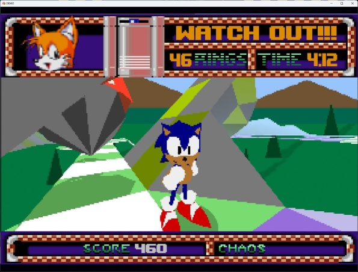

SAGE 2023 has ended, and I did good on my previous promise by playing a heckuva lot of games.
Here are some notable ones I've played, in case you might be interested!
Gatoslip

I liked this a lot, topdown RPGs on megadrive always make me think about Soleil/Centy, although the Deltarune inspirations are much more obvious -- Having sonicy platformer sequences instead of shmup is really fun.
B.U.D.D
This game truly wears its influences on its sleeve and reminds me I should finish that playthrough of Popful Mail* I started all those years ago.
Combat system is fun without being too overbearing as things stand, I think it'll be in a pretty good spot once the few missing moves are in the full game.
The SA2-inspired combo meter made me smile but I usually don't get more than a 5 or 6x combo outside of the training room ü•≤
Really great pixel art too! Look at this blessed fake email client. üôè The image loading effect is simple but effective.
Susan Taxpayer

I really dig the theming of this, 90's americana office settings are becoming a lost artform and I love how the soundtrack/SFX plays along. (tada.wav playing when you get every golden paperclip is chefs kiss tier shit)
The Pizza Tower comparisons are inevitable considering the artstyle and the WL4 inspiration, but this game is much closer to Wario Land speedwise.
Input windows are a bit tight for some moves right now and the demo doesn't show all the planned powerups, so I'm interested to see what comes next.
Sondro Gomez
Art direction is A+, both with the ingame sprites and the cutscenes/outside art.
This has 3 playable characters, each going through variants of the same levels with (heavily) tweaked music**/level design.
Despite looking like Castlevania it's nowhere near as stiff, the game ends up reminding me more of Ducktales due to the variety of moves available.
Sonic USB Online

The Sonic CD design philosophy cranked up to the absolute maximum, how the hell does this have so much content packed in I'm never getting through all of this WHY IS ECCO GETTING IN THE SPECIAL STAGE RING
I like the emphasis on badnik bounce combos to get extra XP, even though I'm not sure what the XP actually does... Game is all vibes though, I really dig the soundtrack and aesthetics overall.
(the online features are ok? I guess? it's mostly people trying to figure out how to unlock characters)
Gunburst

Small 1-boss demo, played it on a real MegaDrive for kicks.
Game looks great! I could not beat that boss.
The bounce attacks are way too unpredictable for a game with 1-hit kills.. I hope this gets completed though!
Sonic and the Gunslinger
2023 YEAR OF FANG THE SNIPER YEAAAAAAAAAAAH
I haven't played SRB2 in close to 20 years at this point and it's crazy to see the kind of stuff that can be built with it now...
I really like the attempt at making this feel like a storybook game with multiple characters, it worked really well imo. Levels are fun*** to go through, and I appreciate the attempt at giving each sonic level its own small gimmick to keep things fresh.
Bun 'N Gun
Large levels to speed in while scavenger hunting for objectives.
It's incredibly fun to just zip around the physics-based playground knowing the grappling hook can always save you even if you dash straight into a pit.
The objective-based gameplay? Not as good sadly, targets are too small and having to capture them is a bore -- I think making them a bit larger and just having the player shoot them would help a lot in keeping the pace going.
Project 32X

An attempt at remaking Sonic Mars.
I appreciate the attempt in trying to make it look like a 32x game with the reduced draw distance and all, instead of reproducing chris' mockup movies 1:1.
Not much going on for the moment, but might be cool if it gets finished.
Swolemochao 1&2
i have a mechanical keyboard and the constant clacking while playing this made my wife leave me
9/10
Game Cycle
This has a fake operating system, so of course i'm checking it out! This is a selection of faux-shareware games to play.
I really like the concept of playtesting/having different challenges for each game - It reminds me of the Game Center CX NDS games# which had similar mini-challenges to keep you playing those faux-retro games.
Except the games here are not very engaging...
I feel like there should be at least a few standout titles, while I can totally understand throwing a few intentional simple games for that authentic 90s shareware CD compilation experience, none of the three games in the demo really made me want to keep playing.
* And actually try Monster World, watch Dirty Pair, etc etc you get the gist
** The music theme got a bit boring hearing 3 variants of it in a row... I don't think this would be a problem in the final version where you'd play other levels before coming back to level 1
*** except those water wheel jumps, incredibly painful even with the bubble shield :')
# Which are getting a rerelease compilation on Switch with updated 3D graphics and new games??? I don't think this'll get an english release sadly


{kind=link}
{kind=link}